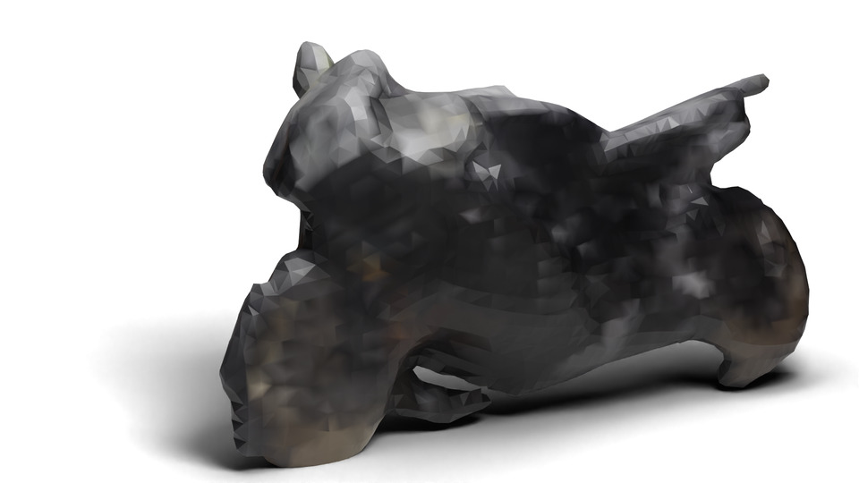

Shape Reconstruction from a short cell phone video, showing reconstructed masks.
Fast, reliable shape reconstruction is an essential ingredient in many computer vision applications. Neural Radiance Fields demonstrated that photorealistic novel view synthesis is within reach, but was gated by performance requirements for fast reconstruction of real scenes and objects. Several recent approaches have built on alternative shape representations, in particular, 3D Gaussians. We develop extensions to prior work on differentiable rendering with 3D Gaussians, such as integrating differentiable optical flow, exporting watertight meshes and rendering per-ray normals. Additionally, we show how two of the recent methods are interoperable with each other. These reconstructions are quick, robust, and easily performed on GPU or CPU.
Additional examples of optimizing a shape reconstruction from a CO3D video sequence. Using forty 3D Gaussians.
Meshes can be exported and rendered in an external program like Blender.
The addition of differentiable optical flow can aid the reconstruction to produce more accurate shapes.
Both Fuzzy Metaballs and 3D Gaussian Splatting use 3D Gaussians as the underlying shape representations. Here we show a 3DGS reconstruction of the ficus tree, exported via our mesh exporting pipeline.